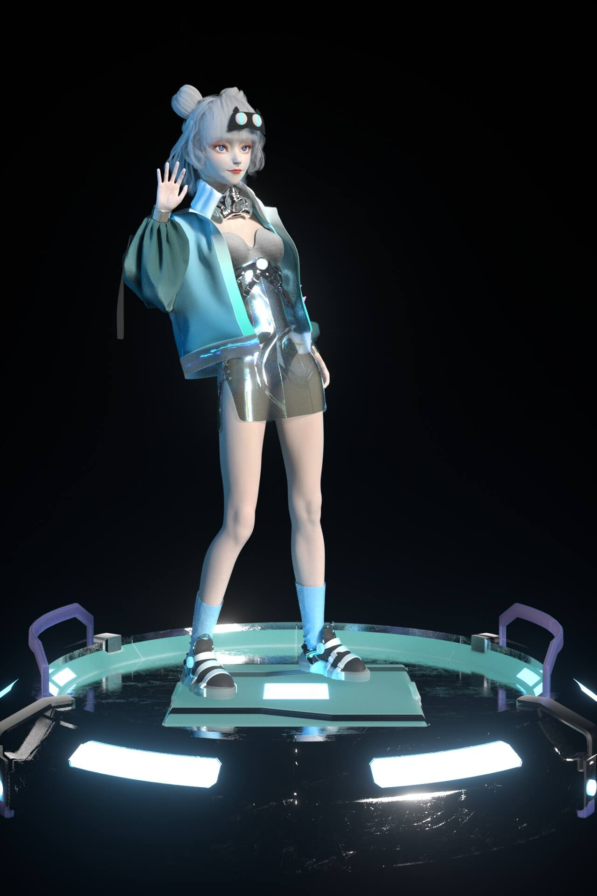
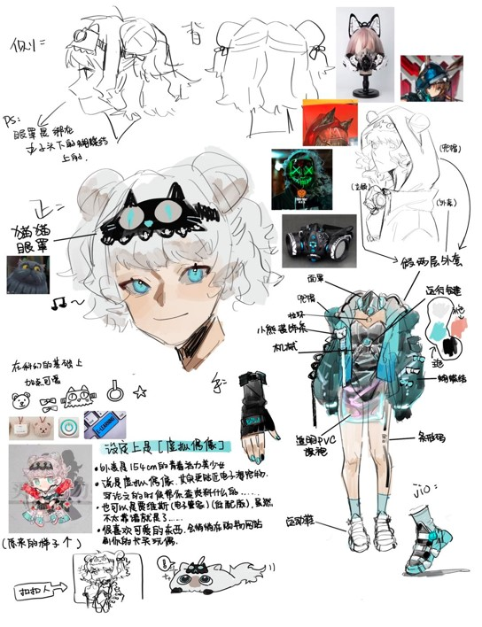
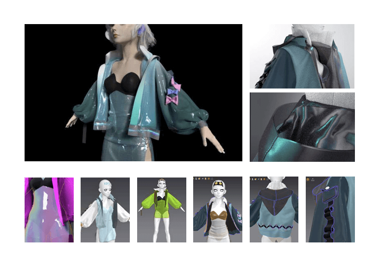
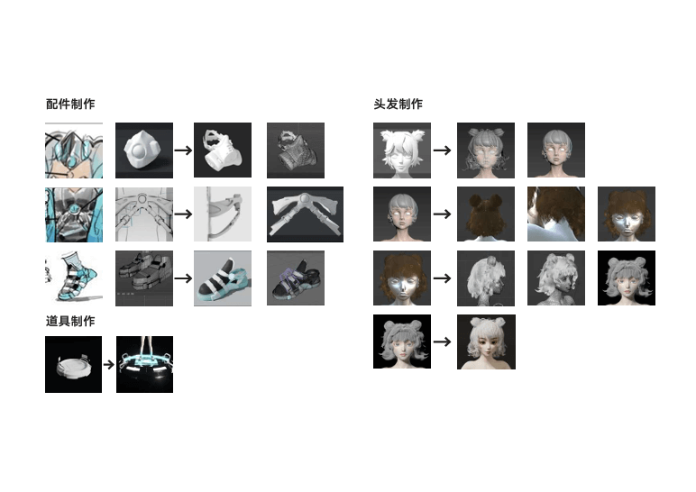
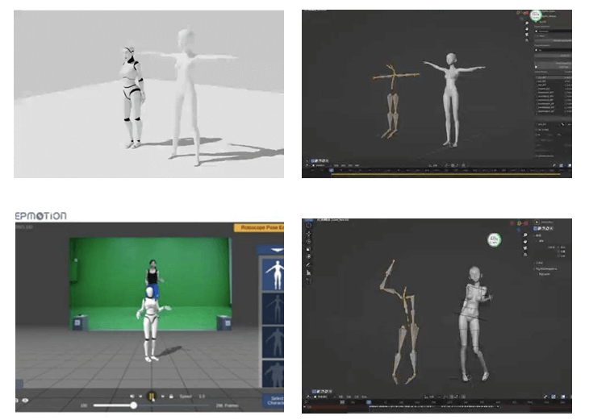
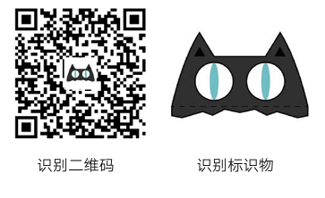

MIRROR
角色设定 Character Profile
Mirror 是一个虚拟数字人项目，其名灵感源自镜子，象征映照人们的思想。 在元宇宙背景下，我们致力于打造一个不仅有外表，更能传达情感、满足社交需求的虚拟角色。
- 姓名： MIRROR
- 风格： Cyberpunk / Futuristic
- 核心功能： 情感交互 / AR 陪伴
- 技术栈： C4D / Octane / UE5 / Kivicube

设计演变 Design Evolution
从前期手绘草图，到服装板片模拟，再到最终材质渲染的完整过程。



动捕与交互 Motion Capture & AR
利用动作捕捉技术赋予角色灵魂，并结合 AR 技术打破虚实边界。

实时动作捕捉
通过绿幕与动捕设备，将真人动作实时映射到虚拟模型上。

AR 场景交互
基于 Kivicube 平台，用户可通过手机扫描识别码，召唤 MIRROR 进入现实世界。